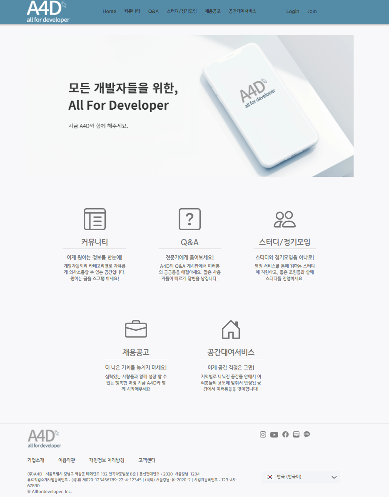
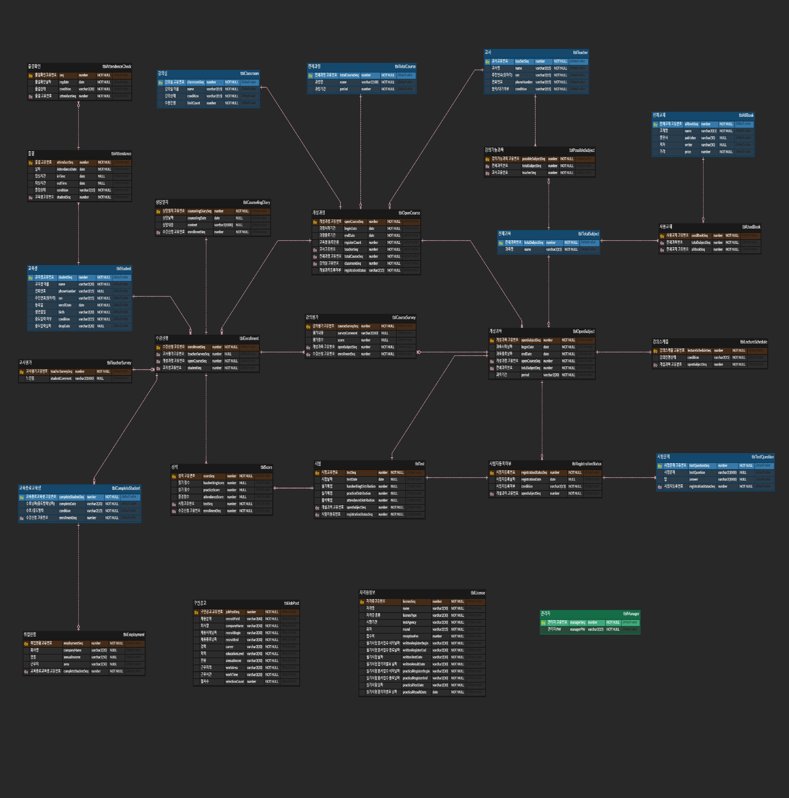

My Portfolio

5人 Team Project
JSP/Servlet Project
개발자들을 위한 사이트 제작
개발 환경: Eclipse, SQL developer
사용 기술: JDBC, DOM, JQuery, API, High-Chart 등

5人 Team Project
Oracle Project
센터 내에서 사용하는 운영관리 프로그램 구현
개발 환경: SQL developer
사용 기술: view, procedure, trigger, function 등

5人 Team Project
Java Console Project
파일 입출력 기반의 사내 전산관리 시스템 구현
개발 환경: Eclipse
사용 기술: BufferedReader, BufferedWriter, Collection 등